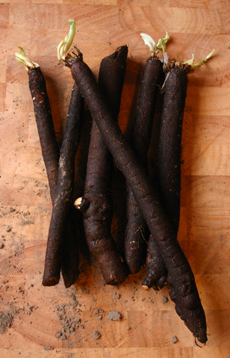

Si il existe en Belgique une espèce sauvage de scorsonère - le scorsonère des prés (Scorzonera humilis)-, celui-ci est très rare et on évitera donc de le cueillir. Le scorsonère que l'on trouve dans nos assiettes est la variété cultivée originaire d'Espagne. Il s'agit d'une asteracée (la grande famille, notamment des pissenlits), et c'est la racine qui est consommée.
Scorsonère ou salsifis? Il s'agit bien de deux espèces différentes. Cependant, il semblerait que ce qu'on nous vend sous le nom de salsifis soit majoritairement du scorsonère. En soi, pas de problème, les deux se cuisinent de la même manière et sont assez proches de goût.
A l'achat, toujours veiller à choisir des racines fermes et les plus fines possibles. Les scorsonères se gardent 4-5 jours au frigo lorsqu'ils sont bien frais.
Le scorsonère se cuisine de différentes manières et peut même se manger cru. Il faut le peler et déposer directement les tronçons dans une eau vinaigrée ou citronnée. Le scorsonère s'oxyde en effet très rapidement, ce qui lui donne une couleur brunâtre peu ragoûtante. C'est d'ailleurs la raison pour laquelle il est majoritairement mangé cuit.
Une fois pelé, le scorsonère se cuit donc à l'eau bouillante ou à la vapeur. Attention cependant à surveiller la cuisson et à l'arrêter tant que le légume est encore croquant. On évite ainsi ces tronçons farineux disponibles en conserves qui dégoûtent à vie tous les enfants qui doivent les manger en cantine.
Plusieurs préparations possibles, donc, mais la royale reste quand même celle au beurre et au citron. Même si, il faut l'avouer, ce n'est peut-être pas la plus diététique...